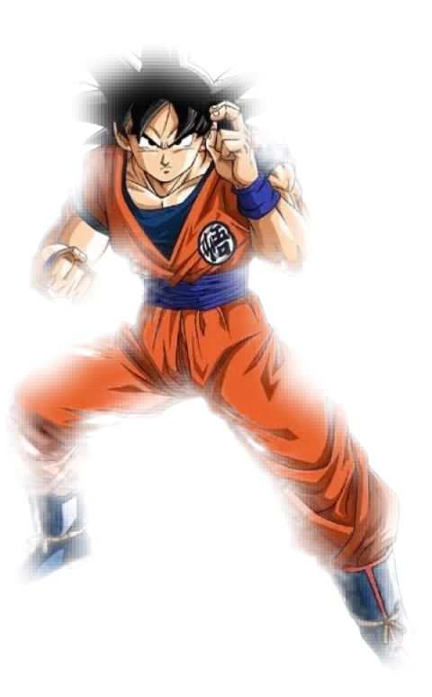
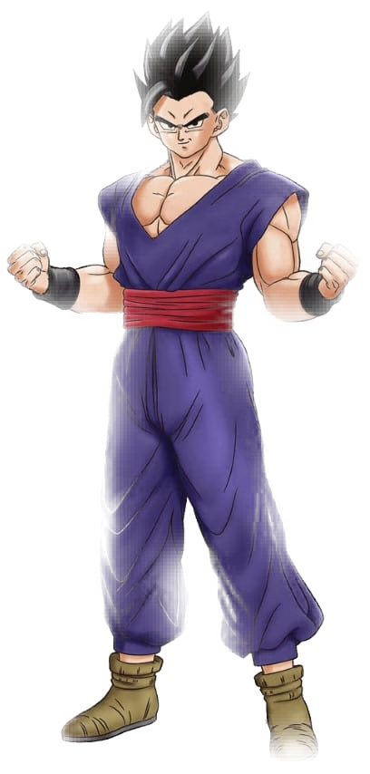
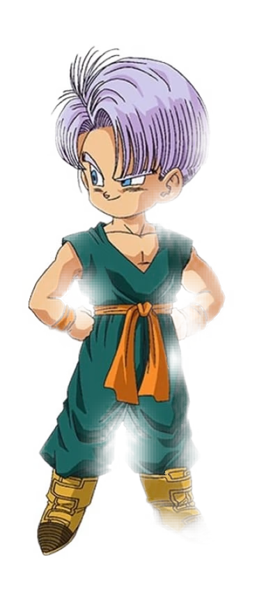
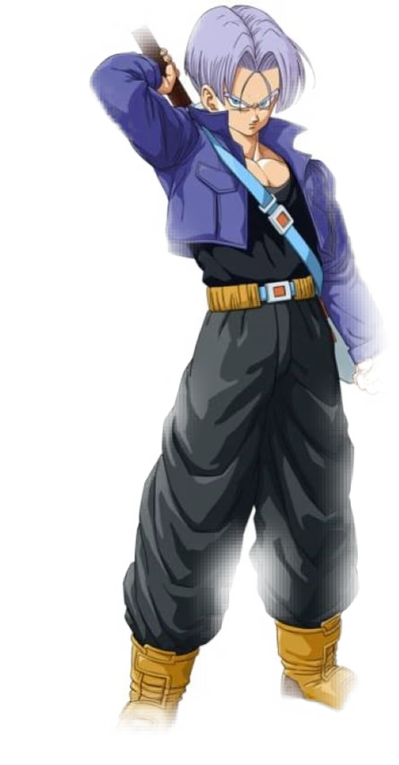
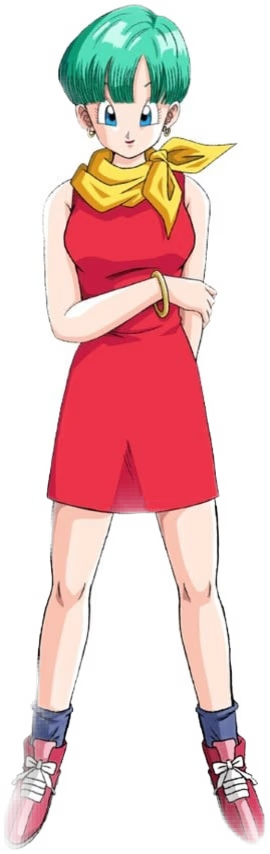
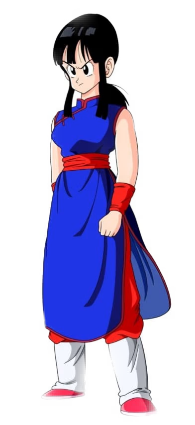

SON GOKU
De son vrai nom Kakarot, Son Goku est joyeux, enthousiaste et curieux. Son entraînement acharné et son héritage Saiyan le rendent toujours plus fort, même au bord de la mort.
Watch now
The object-fit CSS property specifies how the contents of a replaced element should be fitted to the box established by its used height and width (from MDN).
Unlock the art and science of interface development. This isn’t just about pushing pixels or following documentation — it’s about mastering the tools, understanding the nuances, and shaping experiences with intention.
De son vrai nom Kakarot, Son Goku est joyeux, enthousiaste et curieux. Son entraînement acharné et son héritage Saiyan le rendent toujours plus fort, même au bord de la mort.
Watch now
Gohan est le premier fils de Son Goku et de Chichi. Très doué au combat, son potentiel de puissance surpasse de loin celui de son père. Il combattra aux côtés des protagonistes dès son plus jeune âge et aidera notamment l’équipe à vaincre Cell.
Watch now
Goten est le deuxième fils de Son Gokû et le petit frère de Gohan. Contrairement à son aîné, le personnage n’évoluera qu’en binôme avec Trunks, son ami et rival de toujours.
Watch nowReconnaissable à ses cheveux violets, Trunks est le fils de Vegeta et de Bulma. Il est têtu, capricieux et espiègle. Il obtient facilement ce qu’il veut.
Watch now
Contrairement au Trunks normal, Trunks du futur a évolué dans un monde apocalyptique et n’a jamais connu son père. Il est réservé, sérieux et revenu du futur pour sauver Son Goku et battre Cell.
Watch now
Bulma est la femme la plus riche et la plus intelligente au monde. Elle aidait Goku à retrouver les 7 boules de cristal, puis se met en couple avec Vegeta et a deux enfants avec lui : Trunks et Bra.
Watch now
Épouse de Goku, sa personnalité aura beaucoup d’influence sur son mari, qui deviendra au fil du temps un tantinet moins niais. Elle s’inquiète pour le futur de son fils Son Gohan, le voyant plutôt médecin que combattant.
Watch now
It's not all just easings and compositions. Time plays a crucial part in various UI patterns that might not seem obvious at first.
Watch now